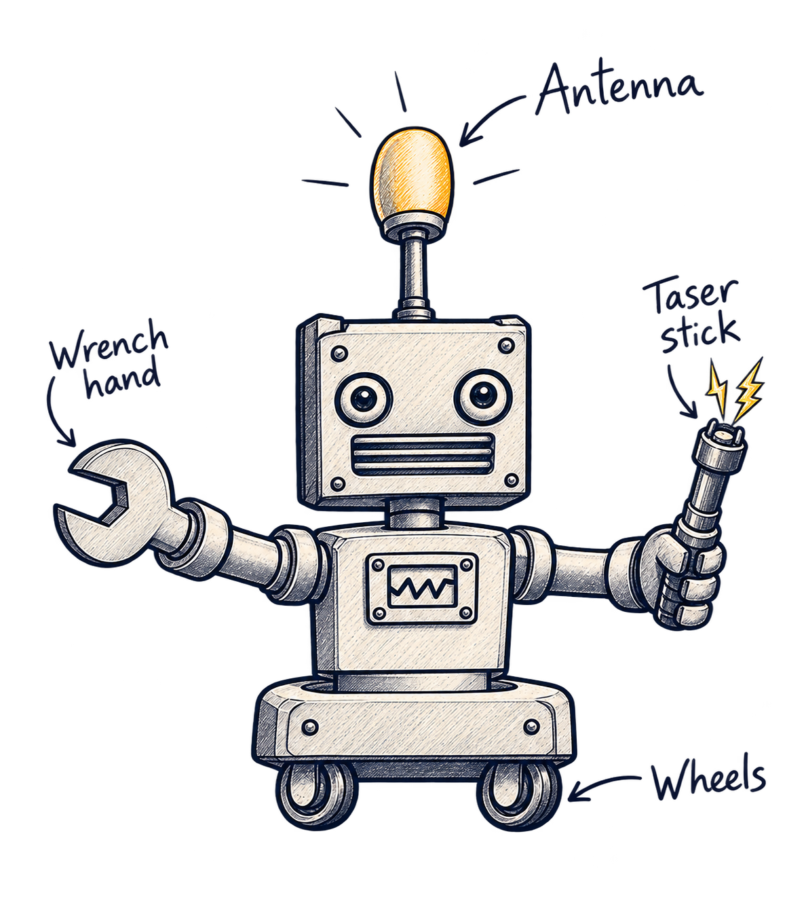
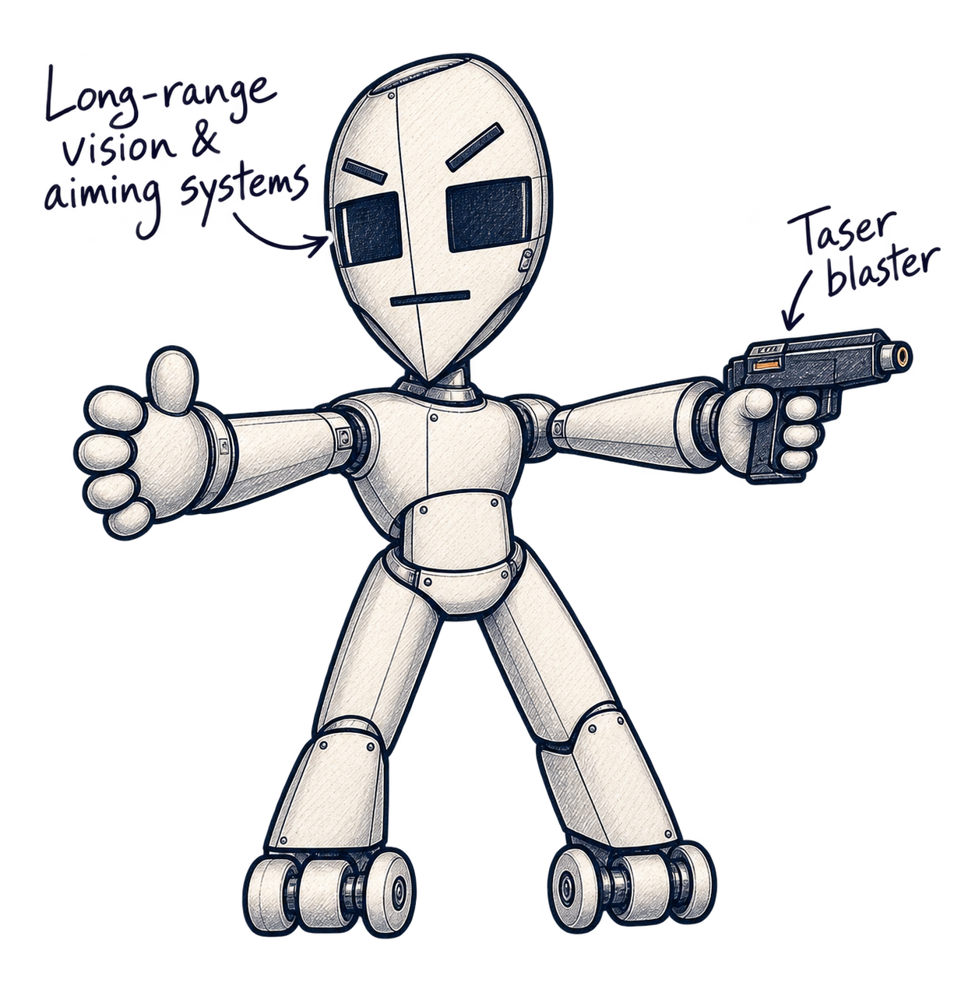
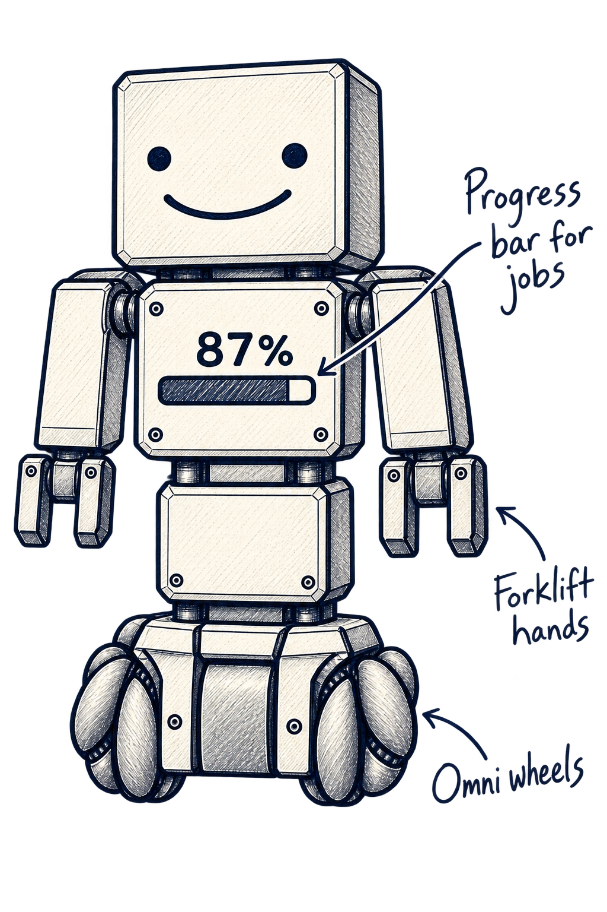
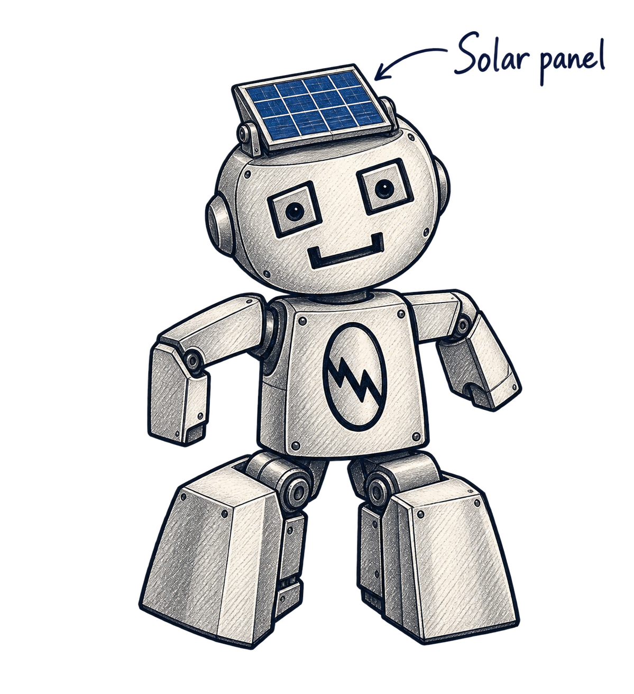
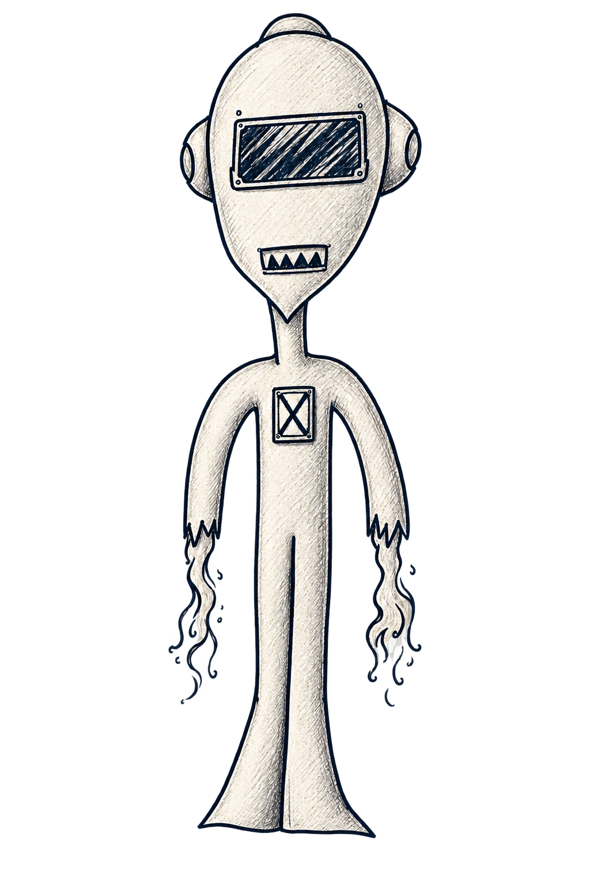
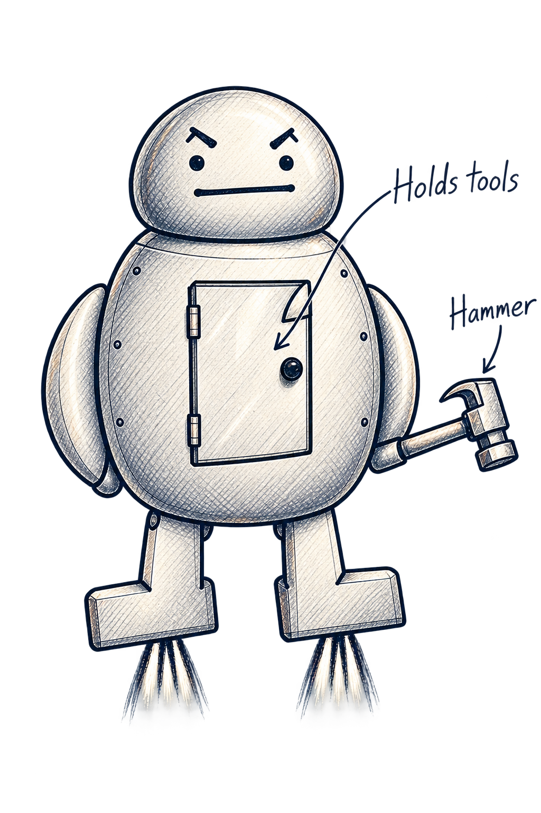
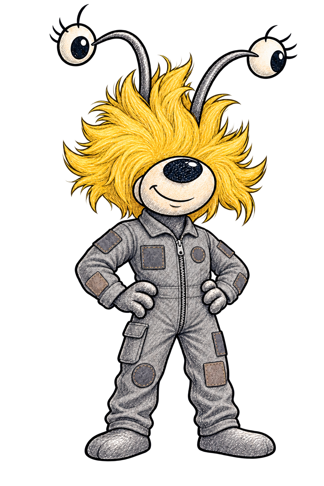
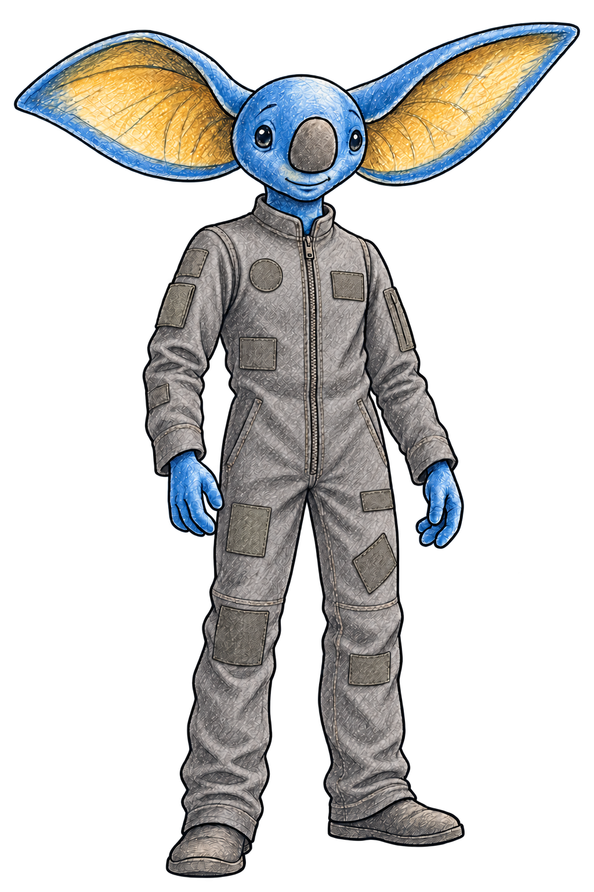
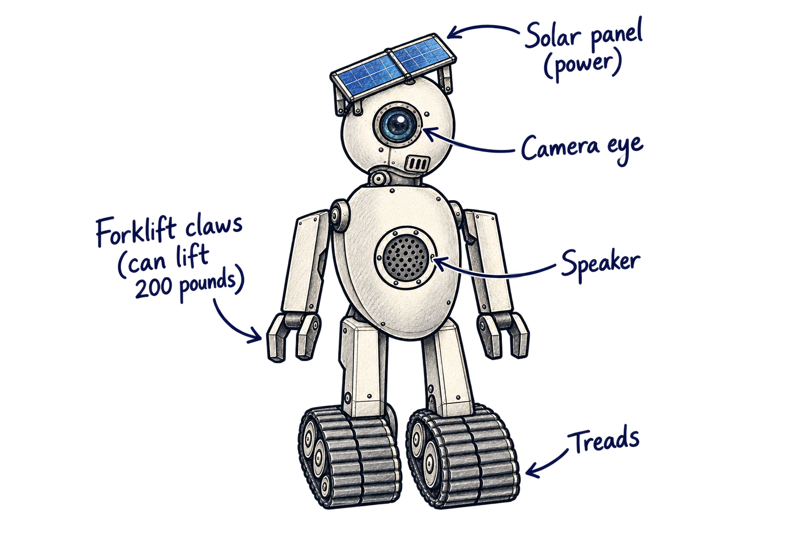

Drawing 1
A flatter, more serious mouth and the original equipment callouts.

Drawing 2
A straight mouth, with notes for the blaster and eye systems.

Drawing 3
Approved design, with the original equipment callouts added.

Drawing 4
A clearer photovoltaic panel and more refined mechanical construction.

Drawing 5
Approved illustration retained unchanged.

Drawing 6
Approved design, with tool-storage and hammer callouts.

Drawing 7
Pip, the pilot — a natural smile, tousled yellow hair and independently looking antennae-eyes, in her patched grey crew jumpsuit.

Drawing 8
Captain Azul — in the same patched grey crew jumpsuit described in Space Walker.

Drawing 9
Approved design, with solar-panel, camera, speaker, claw and tread notes.
